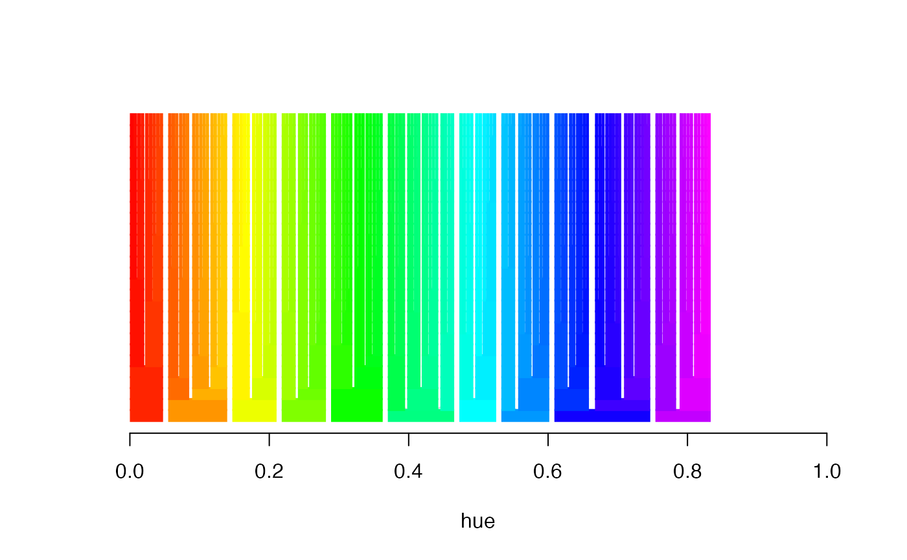

Basics.Rmdlibrary(clusterLUTs)
Atlas file is located in current working directory so simply read it
atlas <- read.tree(system.file('extdata/sbm_1_145_0_atlas.mat', package = 'clusterLUTs'))
By default a column for individual areas is added if that is not present in the input file.
The LUTs are derived directly from the atlas file with a single call to treeluts:
tl <- treeluts(atlas, outdir = '.', basename = 'oct_')
This command also creates the *lut files in the current directory.
To visualize the LUTs create the tree and plot it
tr <- tree.ranges(atlas) tree.ranges.plot(tr, show.tree = TRUE, lwd = 10, lend = 1)

Note: The order of colors does NOT correspond to the cluster indices in the atlas file.